여수, 맞춤
추천일정
입니다.
구도심·엑스포·돌산·남해안까지, 코스별로 가볍게 즐겨요.
Day 1
Day 2
Day 3
1
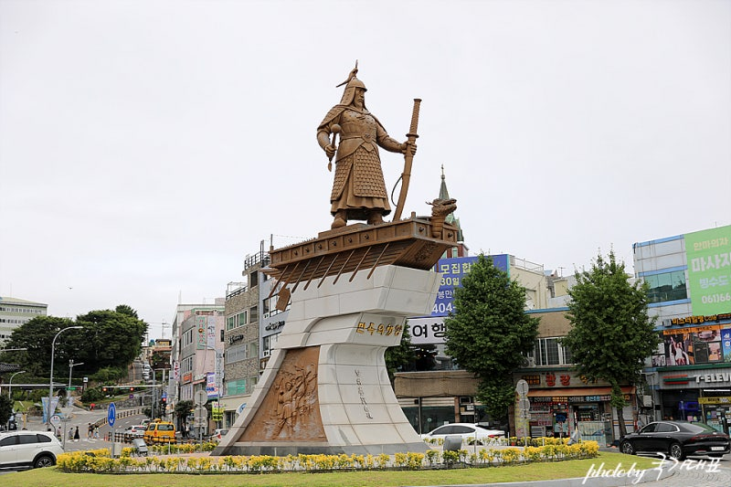
이순신광장
square ·
전라남도 여수시 중앙동 413
거북선/장군동상과 분수, 밤 야경 산책 스타트.
2
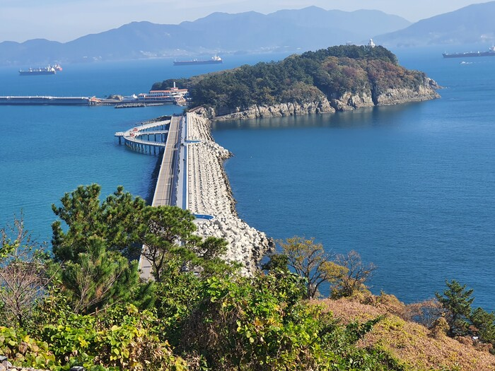
오동도
island walk ·
전라남도 여수시 오동도로 222
동백 숲섬 산책과 등대뷰. 데크길이 잘 정비돼 있어요.
3
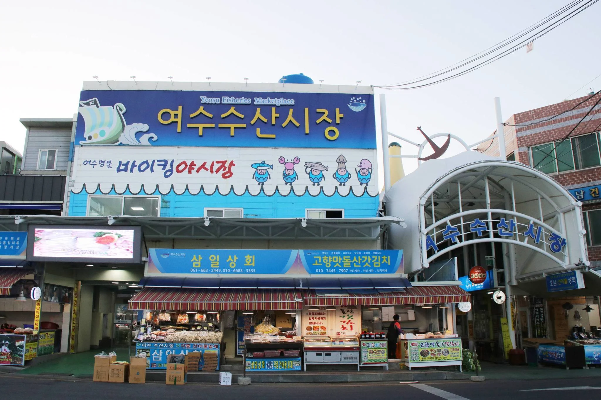
여수 수산시장
seafood market ·
전라남도 여수시 교동시장1길 16
게장/회/새꼬막 등 현지 미식. 구입 후 식당에서 식사 가능.
4
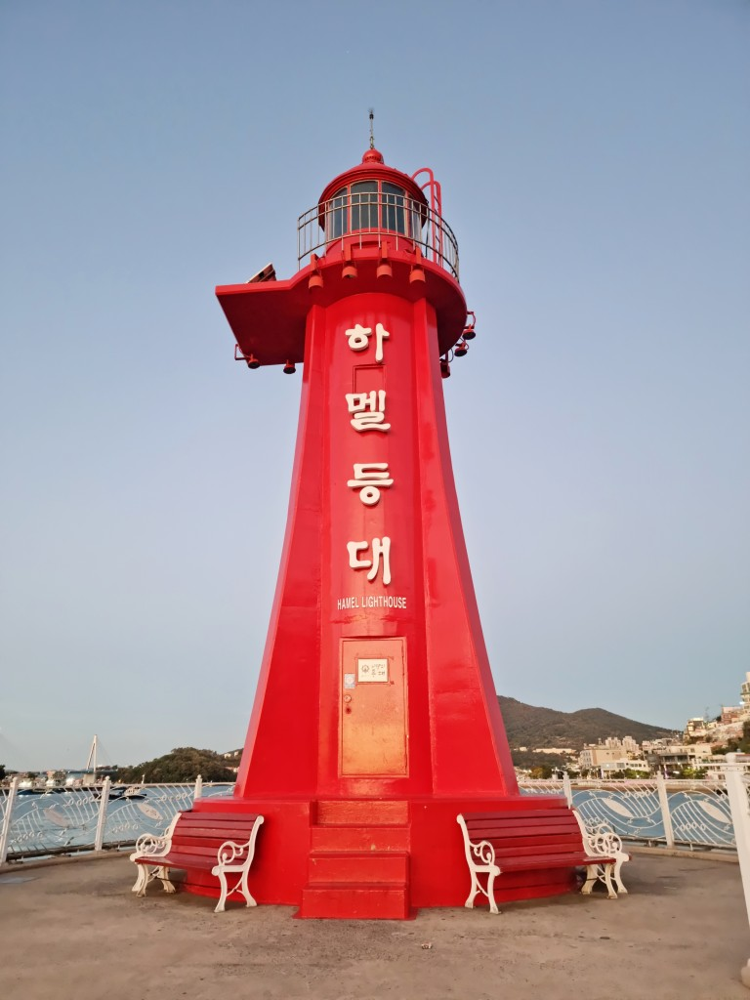
하멜등대 & 고소동 천사벽화골목
spot ·
전라남도 여수시 종화동 일대
레트로 골목과 바다뷰 포토스팟. 석양 타임 추천.
5
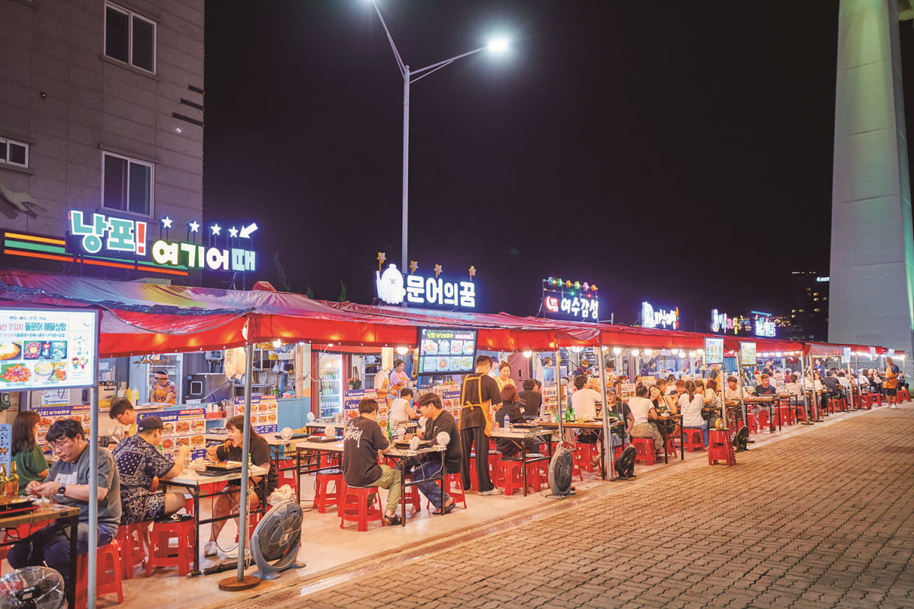
여수 낭만포차거리
food street ·
전라남도 여수시 종포해양공원 일대
밤바다 보며 해물라면/꼬막무침. 대기 줄 고려.
1
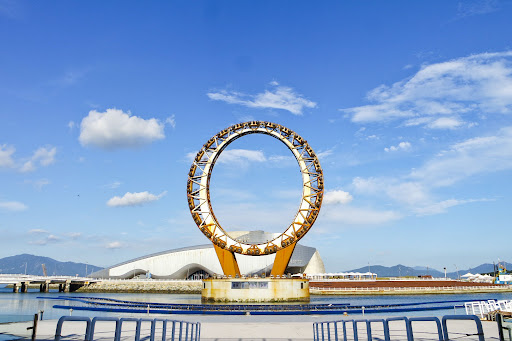
여수 엑스포해양공원
park ·
전라남도 여수시 박람회길 1
해양공원 산책과 관람차, 전시관. 가족 여행 코스.
2
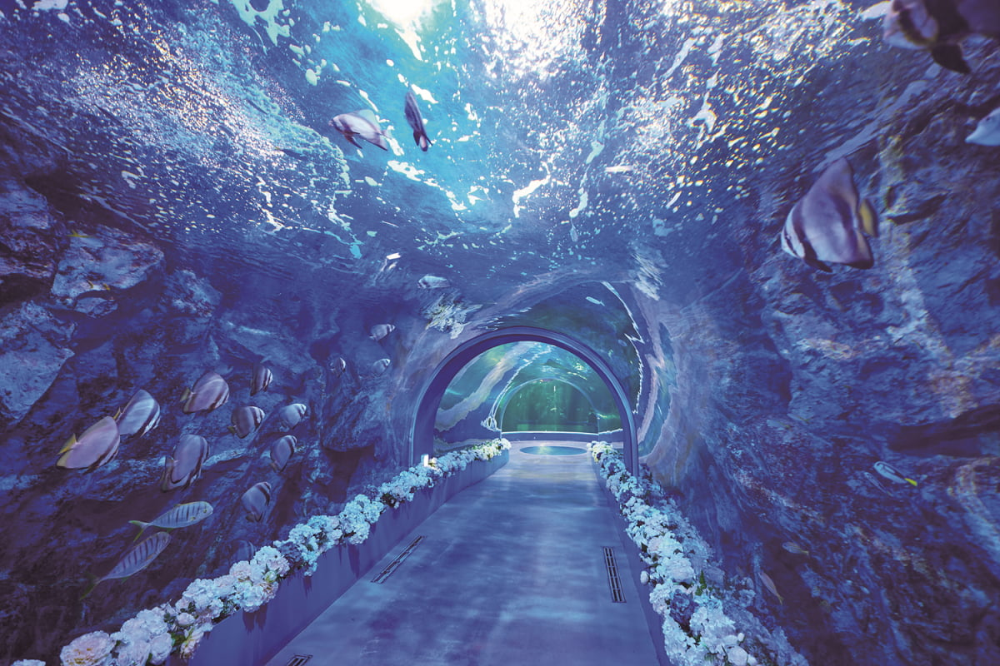
아쿠아플라넷 여수
aquarium ·
전라남도 여수시 오동도로 61-11
대형 수조와 해양생물 체험. 비 오는 날 대체코스로도 좋아요.
3
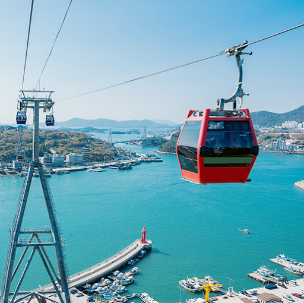
여수 해상케이블카
ride ·
전라남도 여수시 돌산읍 우두리 1-3 (자산공원~돌산공원)
바다 위를 가르는 케이블카. 야간 탑승 시 야경이 특히 좋아요.
4
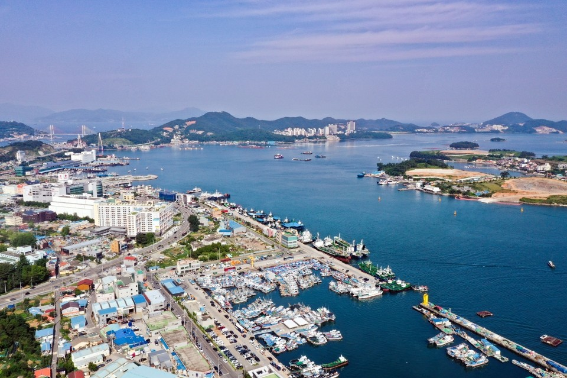
돌산공원 & 돌산대교 전망
view ·
전라남도 여수시 돌산읍 우두리 산1-11
케이블카 하차 후 공원 산책. 돌산대교 야경 포인트.
5
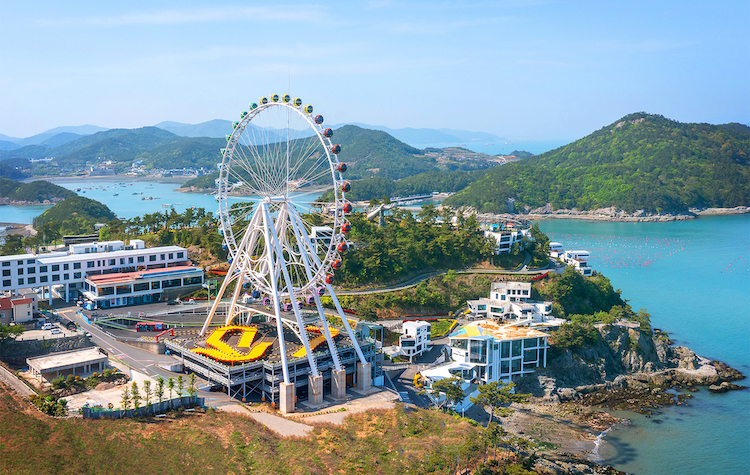
여수 밤바다 산책
night view ·
전라남도 여수시 이순신광장~종포해양공원
해안 산책로 조명과 버스킹을 즐기며 하루 마무리.
1
향일암(돌산)
temple ·
전라남도 여수시 돌산읍 향일암로 60
태양을 맞는 절. 일출/석양 포인트로 유명한 해안 사찰.
2
무술목해변
beach ·
전라남도 여수시 돌산읍 무술목길 일대
잔잔한 바다와 드라이브 코스. 카페와 함께 쉬어가기.
3
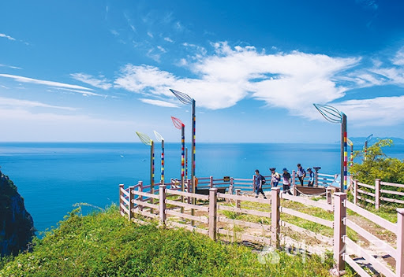
금오도 비렁길
hike ·
전라남도 여수시 남면 금오도 일대
섬 절벽 트레킹 명소. 배편·코스 시간 확인 필수.
4
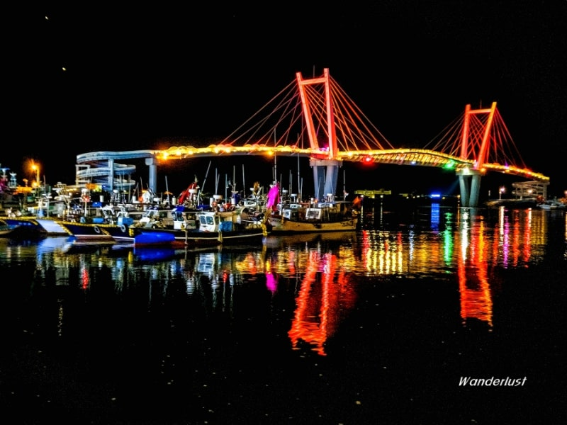
백야도 & 푸른다리
view ·
전라남도 여수시 화정면 백야리
밤 조명으로 빛나는 해상 보도교. 드라이브 코스로 인기.
5
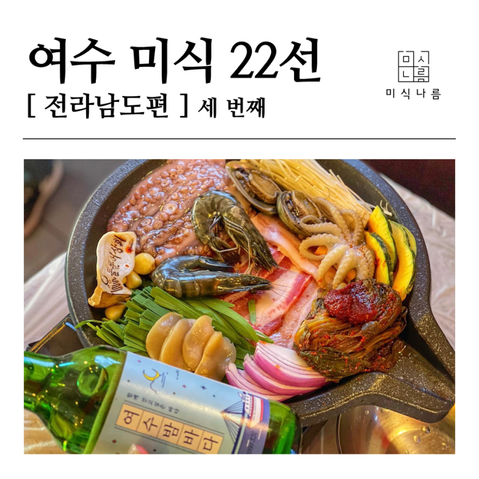
여수 미식 한 끼
food ·
여수 전역
서대회·새꼬막비빔밥·게장백반 등 지역 시그니처로 마무리.
내 일정으로 담기